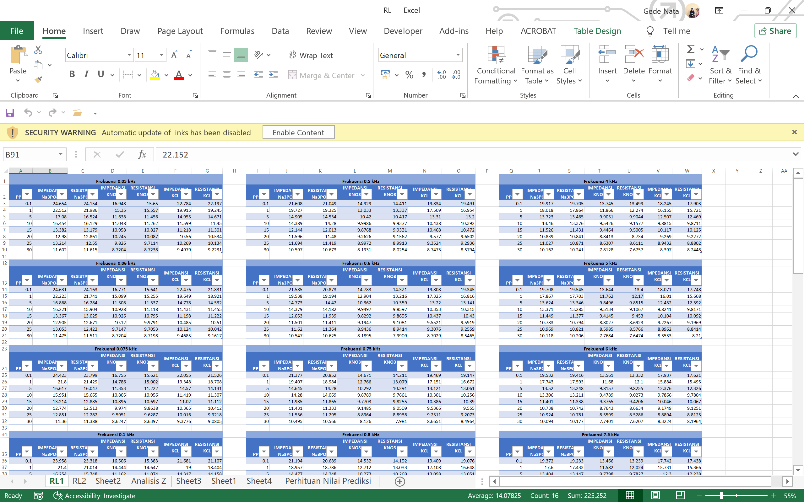
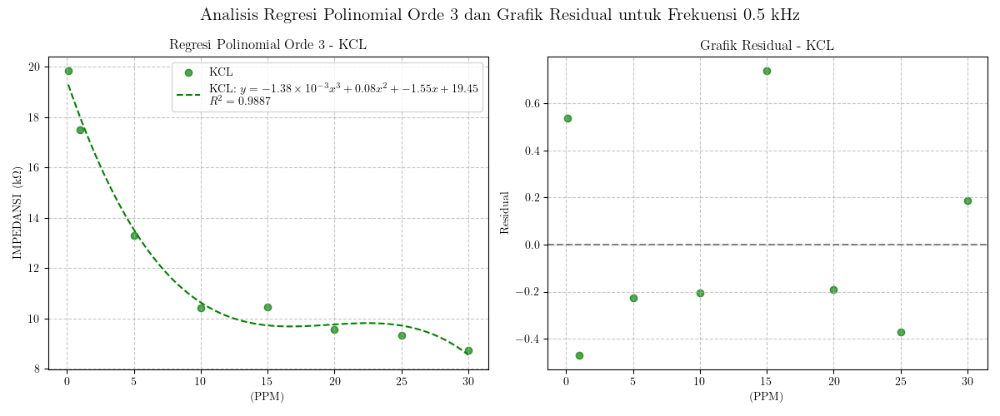
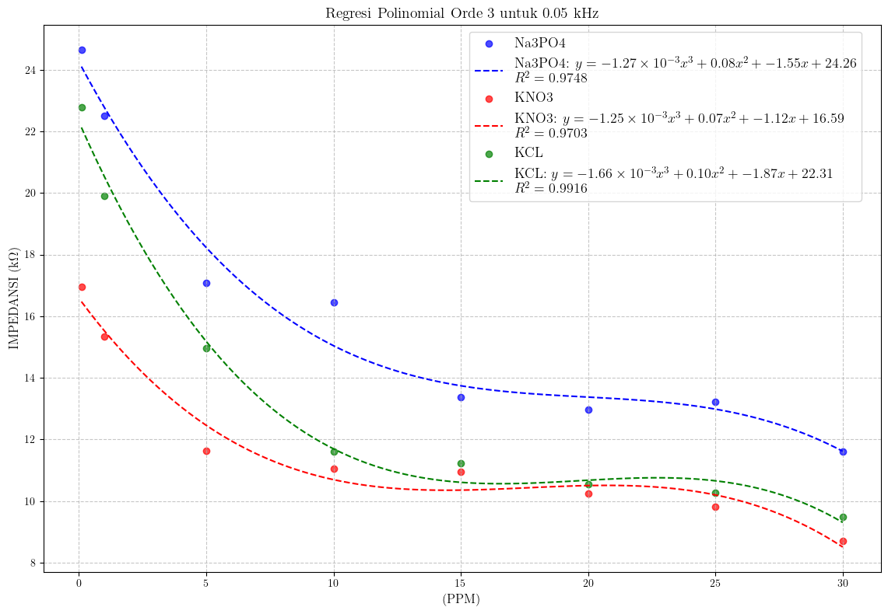
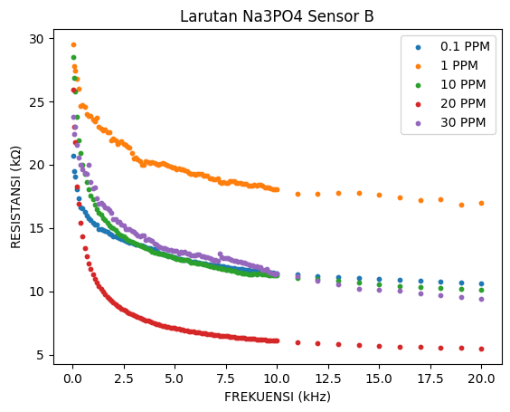
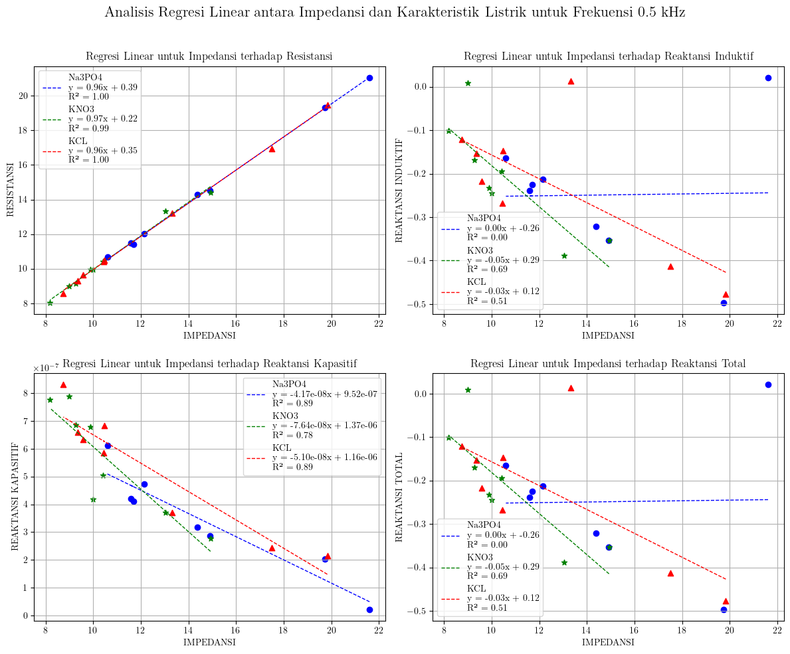
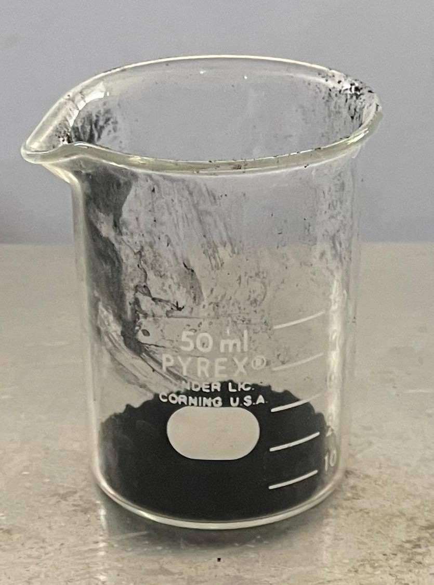
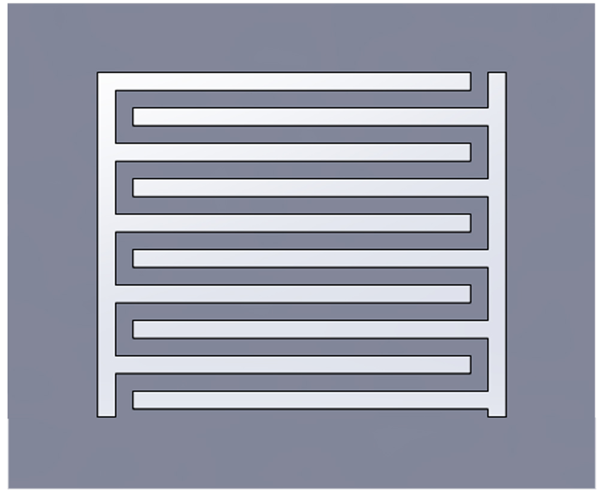
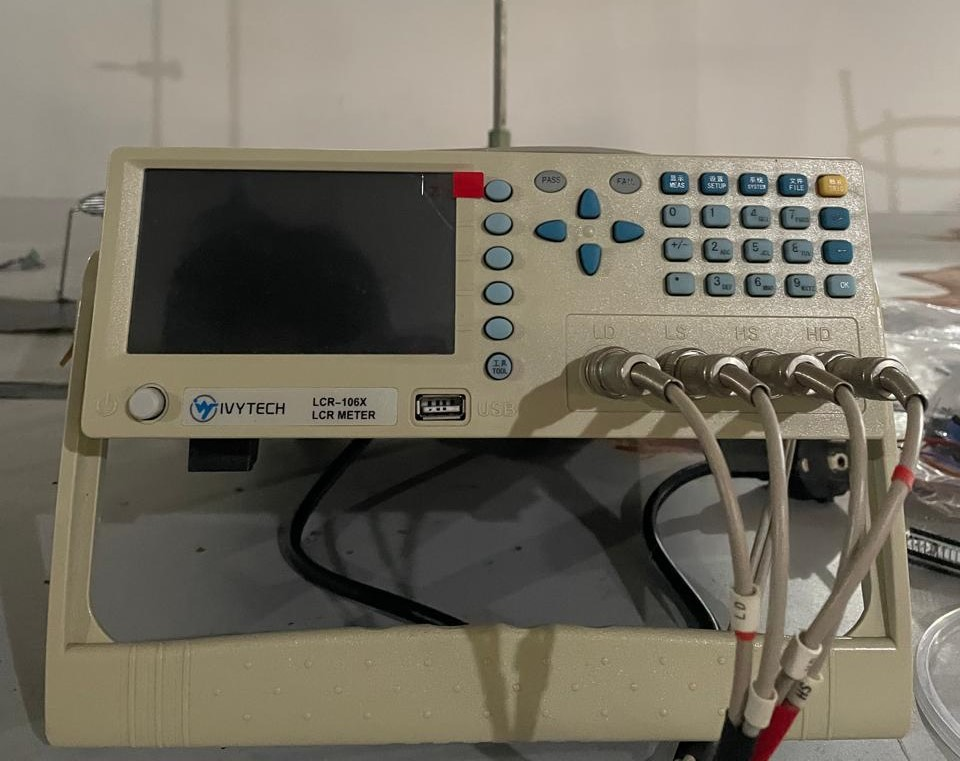
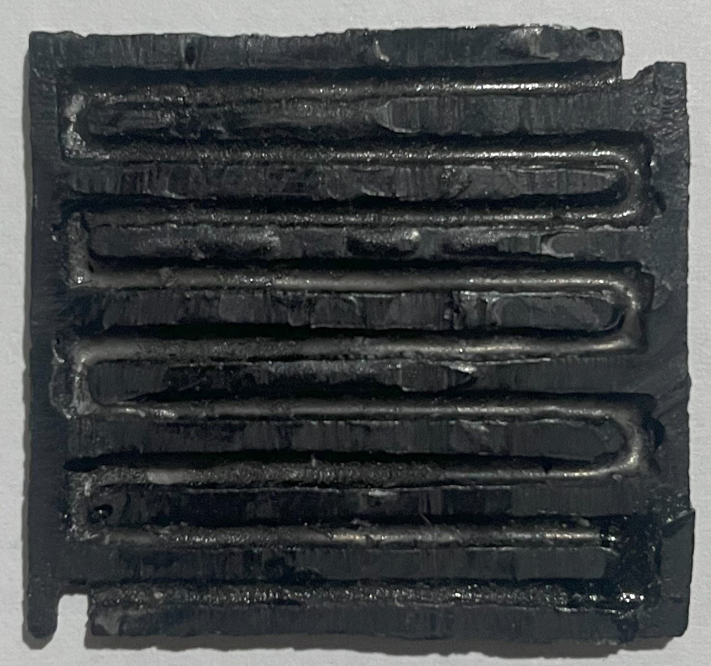

Timeline: Nov 2024 - Jun 2025









This project focuses on developing an impedance-based chemical sensor using Multi-Walled Carbon Nanotubes (MWCNT) as the sensing material to detect nitrate (NO₃⁻), potassium (K⁺), and phosphate (PO₄³⁻) ions in aqueous solutions. The system measures impedance changes caused by ion interactions on the electrode surface, providing a low-cost and sensitive method for nutrient detection.
MWCNT composite material, impedance analyzer, Arduino-based measurement system, MATLAB, and Python for data processing.
Back to Portfolio